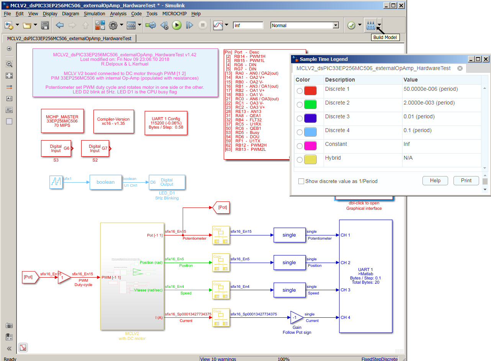
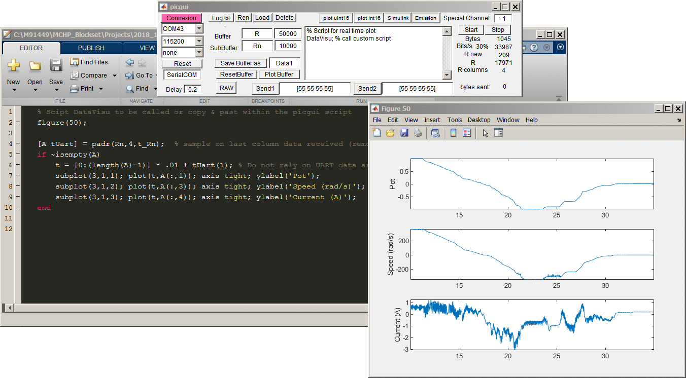

Simulink model to target a dsPIC MCLV board running a DC motor
The model contains blocks to configure dsPIC peripheral (PWM, ADC and QEI) to run a DC motor with the MCLV-V2 board equipped with the dsPIC-33EP256MC506 PIM using internal Op-Amps. Sensors measurements are visualized on the computer while the motor is running.
Getting Started
The model MCLV2_dsPIC33EP256MC506_externalOpAmp_HardwareTest.mdl is for code generation (peripheral blocks have no effects during a simulation). Open the Simulink model and push the build button on the top right, below the Simulink windows menu bar.
 *fig: Model MCLV2_dsPIC33EP256MC506_externalOpAmp_HardwareTest.mdl set-up the dsPIC 33EP256MC506 peripherals with internal op-amps for the MCLV-v2 board. Two PWM signals updated at 20kHz drives a DC motor through a H mosfet structure. One QEI peripheral sampled at 500Hz provides shaft position and speed from an optical encoder. Two ADC channels provides respectively the board potentiometer position and the current measurement from a shunt resistor. These four measurements are under-sampled at 100Hz and sent through the 115200 UART connection to the computer and decoded with the picgui graphical interface.*
{kind=link}
Hardware requirements:
- MCLV-V2 Motor Control Board
- PIM dsPIC33EP256MC506 with internal Op-Amp
- Programmer (PICkit 4, ICD4, Real-Ice, PICkit 3, ICD3, …)
- DC motor (Pravalux Brushed DC Motor, 90 W, 24 V dc, 3000 rpm)
- Cable to send data from the MCLV board (Tx) to the PC (Rx) (like a FTDI cable)
Software requirements:
- Matlab/Simulink
- Embedded coder (Matlab Coder & Simulink Coder)
- Fixed point toolbox
- MPLAB device blocks for Simulink
- MPLAB X IDE development (required to flash the binary from matlab)
- XC16 compiler
Experiment
Generate code and compile:
The build icon on top right of Simulink model, (see fig above) do: 1. generates c source code, 2. compiles c code and 3. flash the resulting binary to the MCLV targeted board.
If programming the board fails (not powered, not connected,…), use the Microchip -> Flash within the Simulink model menu.
Run the DC motor:
With the MCLV2 board powered and programmed, rotate the potentiometer to accelerate motor / reverse direction. Setting the potentiometer at middle position (off) at power on to avoid current surge.
Data Visualization with picgui:
Open the picgui interface (fig) (type picgui at matlab prompt or double click on the Interface Tx-Matlab block in the model) 1. Select host UART port and connect at 115200 bauds 1. Replace the default script within the picgui interface to a call the customized matlab script DataVisu.m 1. Push the start button to visualize runtime curves showing potentiometer, motor position, motor speed and current measured on shunt resistors
{kind=link}
 fig: The picgui interface decode the incoming UART data stream and plot in real-time received values, here potentiometer, motor speed and current measured. Plots in figure are realized with a matlab script which is continuously refreshing the graphs using incoming data. This script can be modified providing all the matlab capabilities to customize visualization or perform further analysis on received data in real-time.